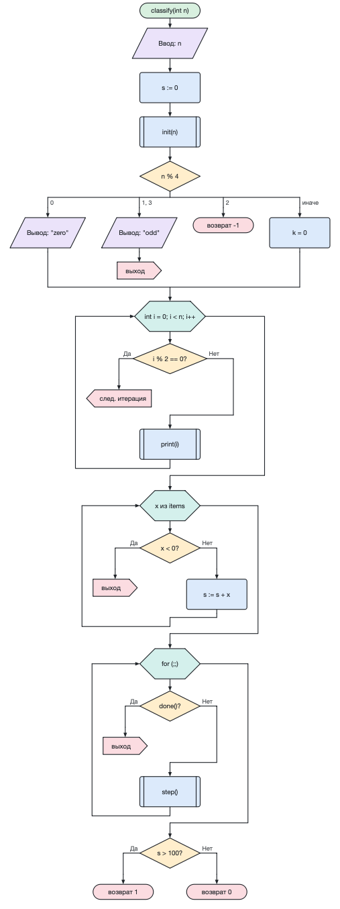

Множественный выбор (switch) — ромб с выражением, от которого расходятся ветви. Над каждой ветвью записаны её значения (несколько значений через запятую), последняя ветвь «иначе» выполняется, если ни одно значение не совпало.
Цикл for в стиле C — шестиугольник «инициализация; условие; шаг», например int i = 0; i < n; i++. Любая часть может быть пустой.
Цикл по элементам — тело выполняется для каждого элемента коллекции: x из items.
Вызов подпрограммы (предопределённый процесс) — прямоугольник с двойными боковыми линиями.
Возврат завершает алгоритм (можно указать значение). Выход (break) покидает ближайший цикл или выбор, следующая итерация (continue) переходит к следующему повторению цикла. После этих блоков линия потока обрывается.
Двойной щелчок по блоку начала позволяет задать имя, параметры и тип результата алгоритма — они используются генераторами кода.
Блоки можно перетаскивать мышью (с Ctrl/Alt — копировать), Esc отменяет вставку.
